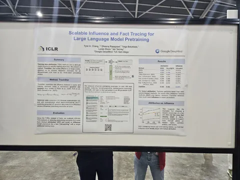
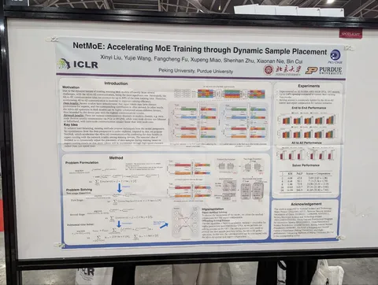
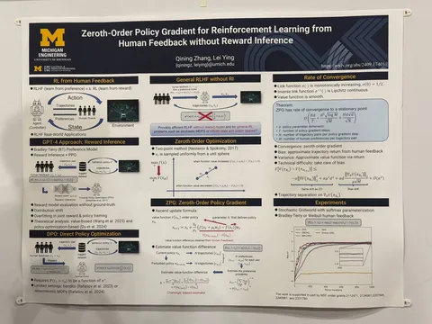
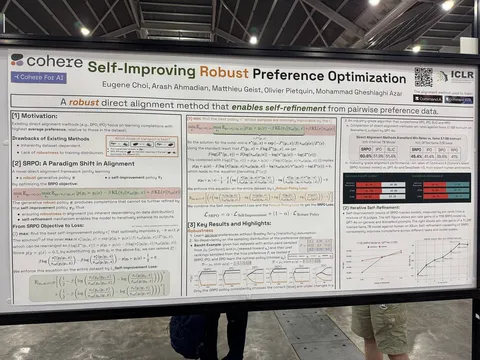
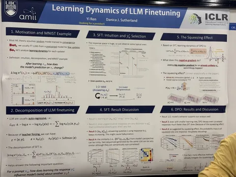
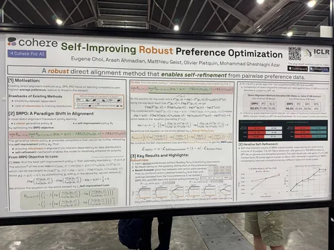
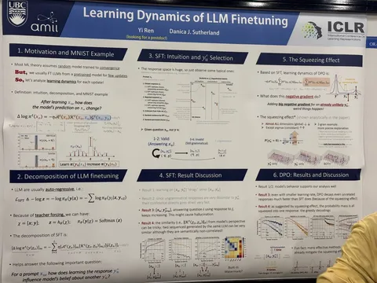
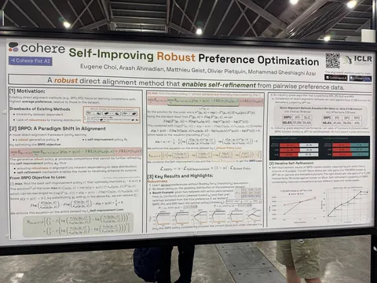
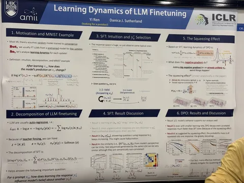

Продолжаем рассказывать о любопытных постерах проходящей прямо сейчас конференции.
Scalable Influence and Fact Tracing for Large Language Model Pretraining
DeepMind предлагает новый метод дебага того, какие примеры влияют на ответы фактовых вопросов. Говорят, что лучше всех градиентных методов определяют именно влияние документа из трейна на генерацию. Ещё из интересного — показывают график, по которому видно, что модели небольшого размера очень часто опираются не на примеры, содержащие факт, а с ростом капасити разница падает.
Авторы отмечают, что их метод подходит даже для мультихопов и ризонингов, несмотря на один градиентный шаг. Ещё сказали, что общались с группой, которая писала статьи о динамики обучения фактам, и они работают в эту сторону. И добавили, что метод полезен для файнтюнов.
NetMoE: Accelerating MoE Training through Dynamic Sample Placement
Авторы предлагают хитрую оптимизацию тренировки Мixture-of-Agents. Во время dispatch + ffn они решают (с помощью аппроксимации integer linear programming), а не выгоднее ли оставить эксперта там, где он сейчас? Возможно, в этом случае combine будет быстрее, из-за использования не дорогих inter-node-пересылок, а дешёвых intra-node или даже in-device. В результате Получают ускорение в 1.67х для простого all-to-all, но ничего не мешает пробовать это же для более умных пересылок.
Zeroth-Order Policy Gradient for Reinforcement Learning from Human Feedback without Reward Inference
Авторы делают оптимизацию нулевого порядка для RL. Идейно похоже на evolution strategies, но «под капотом» тут другой оптимизатор. В статье также предлагают отказаться от RM и заменить её на людей или хотя бы на preference model. Мотивация, зачем так делать, осталась непрозрачной. Рискуем предположить, что это будет медленнее градиентных методов.
Learning from negative feedback, or positive feedback or both
Статья от DeepMind, в которой предлагают обучать на
a log(p(positive) - (1-a) log (negative) - b KL(p_ref(negative) || p(negative))
Таким образом, становятся не нужны контрастные пары — достаточно положительных и отрицательных примеров. У авторов результаты получаются сравнимыми с DPO или лучше.
Self-Improving Robust Preference Optimization
Статья от Сohere. Авторы замешали Nash preference learning в алгоритм вроде DPO/IPO. По формулам выглядит так, будто учат две конкурирующие модели: генератор и улучшатор ответов (на вход получает запрос и предыдущий ответ).
Но по факту это одна модель, просто улучшатору дают подводку вида «вот прошлый ответ, попробуй улучшить» Online не пробовали, но рассказали, что можно вытащить реворд из их формул.
Learning Dynamics of LLM Finetuning
Доклад с теоретическим анализом SFT и DPO, который обосновывает галлюцинации в первом и падение победителя во втором. Выводы: просадка победителя может быть связана с тем, что мы пытаемся уменьшать вероятности для проигравшего, когда они уже и так низкие.
Интересные постеры увидели
#YaICLR
Душный NLP
 

